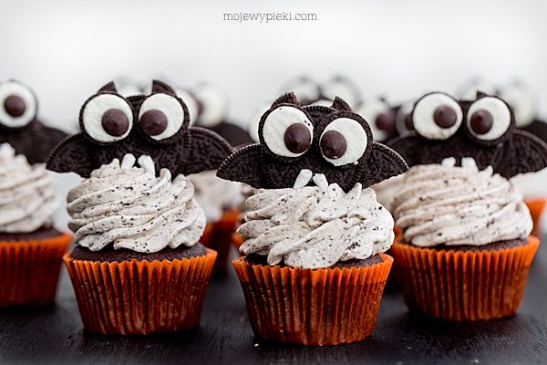
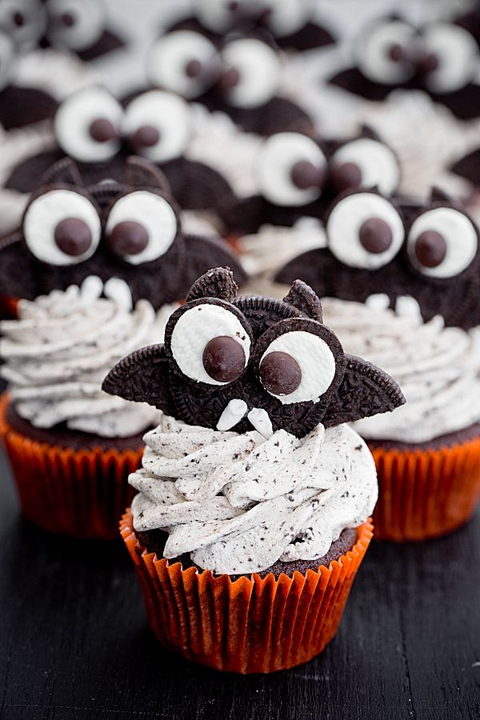
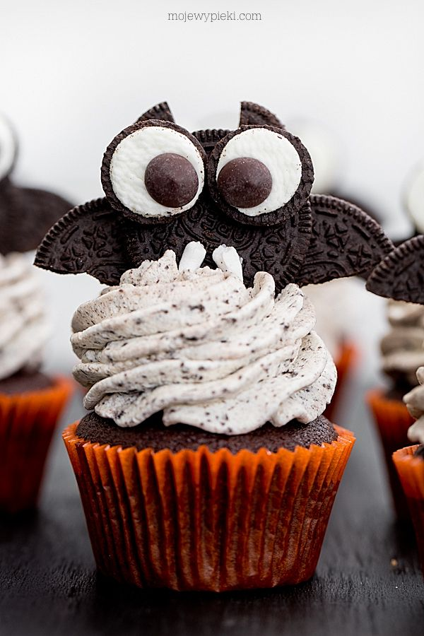
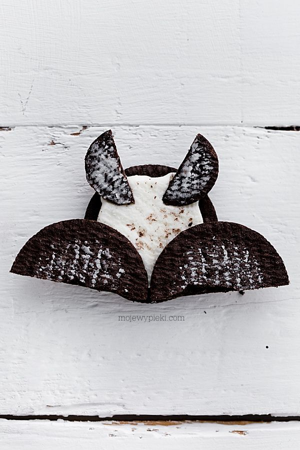

Babeczki nietoperze

Skladniki na 12 sztuk:

- 200 g mąki pszennej np. tortowej
- 2 łyżeczki proszku do pieczenia
- 4 łyżki kakao
- 160 g ciemnego cukru muscovado
- 150 ml napoju gazowanego typu Coca–Cola
- 100 ml oleju słonecznikowego
- 2 jajka
- 2 łyżeczki ekstraktu z wanilii
Przepis na ciasto

- W jednym naczyniu wymieszać suche składniki: mąkę pszenną, proszek do pieczenia,
kakao, cukier. Przesiać, odłożyć. - W drugim mokre – roztrzepane jajka, colę, olej, wanilię.
- Połączyć zawartość obu naczyń, mieszając krótko, tylko do połączenia się składników.
- Foremkę do muffinów wyłożyć papilotkami, nałożyć do nich ciasta,
do 3/4 wysokości papilotki. Piec w temperaturze 175ºC (bez termoobiegu)
przez około 25 minut lub dłużej do tzw. suchego patyczka.
Wystudzić na kratce.
Babeczki urosną z górką – lekko ją ściąć, nie będzie potrzebna.
Skladniki Krem waniliowy z Oreo:

- 300 ml śmietany kremówki 30% lub 36%
- 125 g serka mascarpone
- 2 łyżeczki ekstraktu z wanilii lub 1 łyżeczka pasty z wanilii
- 2 łyżki cukru pudru
- 50 g ciasteczkowych okruszków
(ciastka, które nam pozostały z wykonania nietoperzy,
kruszymy wałkiem lub w malakserze na okruszki)
- Wszystkie składniki (oprócz okruszków)
umieścić w misie miksera i ubić do powstania gęstego kremu waniliowego.
Na sam koniec dodać ciasteczkowe okruszki i wymieszać.
Nietoperze
- 2 opakowania dużych Oreo (154 g każde)
- 6 opakowań mini Oreo (najmniejsze opakowania – snack pack 25 g każde)
- chocolate chips lub M&m’s na oczy
- mini-marshmallows na kły
- Duże Oreo rozdzielić na pół, np. za pomocą nitki.
Do części z kremem będziemy ‚przyklejać’ pozostałe części (jak na zdjęciu obok). - Część bez kremu przekroić na pół – przykleić do ciastka z kremem jako skrzydła.
Małe Oreo rozdzielić nitką, ciasto bez kremu przekroić na pół
i przykleić jako uszy. Małe ciastko z kremem wykorzystać do zrobienia oczu
– przykleić do niego drobinkę czekoladową lub M&m’s. - Oczy przykleić do nietoperza za pomocą białego kremu z Oreo lub lukru królewskiego
lub roztopionych w mikrofali kilku pianek marshmallows.
Kły przykleić do ciastka za pomocą lukru królewskiego
lub roztopionych w mikrofali kilku pianek marshmallows. - Schłodzony krem przełożyć do rękawa cukierniczego z ozdobną tylką np. Wilton 1M
i ozdobić babeczki. W środek każdej z nich wetknąć nietoperza.
Babeczki nietoperze przechowywać w lodówce.